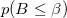
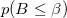
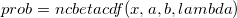
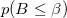
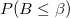
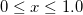
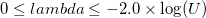
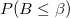
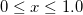
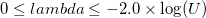

/math-0cc175b9c0f1b6a831c399e269772661.png "a") and
and /math-92eb5ffee6ae2fec3ad71c777531578f.png "b") and non-centrality parameter
and non-centrality parameter /math-c6a6eb61fd9c6c913da73b3642ca147d.png "\lambda") , is defined by:
, is defined by: computes the cdf with the lower tail of the non-central beta distribution. The lower tail probability for the non-central beta distribution with shape parameters and and non-centrality parameter , is defined by:
where
/math-91180ecc9a0bf60887151e06c8dfe3aa.png "P_b(B\leq \beta )=\frac{\Gamma (a+b)}{\Gamma (a)\Gamma (b)}\int_0^\beta B^{a-1}(1-B)^{b-1}dB")
which is the central beta probability function or incomplete beta function.
/math-9dd4e461268c8034f5c8564e155c67a6.png "x") (intput, double)
(intput, double)/math-b0603860fcffe94e5b8eec59ed813421.png "\beta") ,from the beta distribution, for which  , is to be found. (input, double) (input, double) , of the required beta distribution, , where is the safe range parameters as defined by NAG nag_real_safe_small_number (X02AMC). See chapter X02 in the NAG documentation.
,from the beta distribution, for which  , is to be found. (input, double) (input, double) , of the required beta distribution, , where is the safe range parameters as defined by NAG nag_real_safe_small_number (X02AMC). See chapter X02 in the NAG documentation.